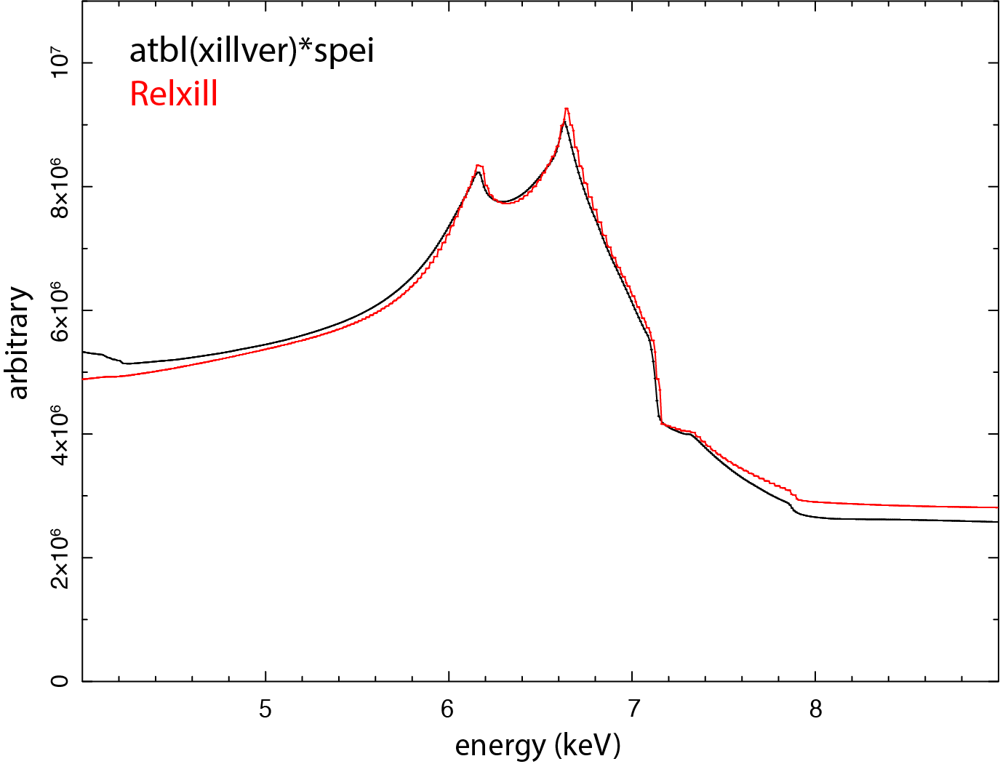

2.9. SPEX solution of the relativistic disk reflection¶
By: Liyi Gu
Here two sets of disk reflection setups are compared: XILLVER convolved with a SPEITH line profile, and RELXILL.
2.9.1. Setup of xillver*spei¶
The table model based on the X-ray reflection code XILLVER can be incorporated in SPEX through atbl (Atbl: Additive table model):
SPEX> com atbl
SPEX> par 1 1 file av /directory/to/xillver/xillverCp_v3.6.fits
SPEX> calc
The relativistic line profile can be obtained by applying the convolution model SPEITH:
SPEX> com spei
SPEX> par 1 2 i couple 1 1 incl
SPEX> com rel 1 2
In this way, the inclination of the SPEI component is coupled to that of the XILLVER model, and the relativistic kernel SPEI has been applied to the XILLVER spectrum.
2.9.2. Validating xillver*spei using Relxill¶
The above setup is compared with a RELXILL calculation using the same set of parameters. The model assumes a disk with solar iron abundance around a maximally spinning black hole, with the inner radius set to the ISCO and the outer radius fixed at 400 gravitational radii. The emissivity index is 2, the inclination angle is 45 degree, the primary power-law photon index is 2, and the ionization parameter is 1.
{kind=link}

As seen in the figure, the two setups agree well for the Fe-K region.
Note
Relxill model can also be incorporated in SPEX using the user model (User: User defined model).
Recommended citation: Garcia et al. (2010)